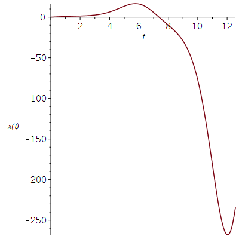
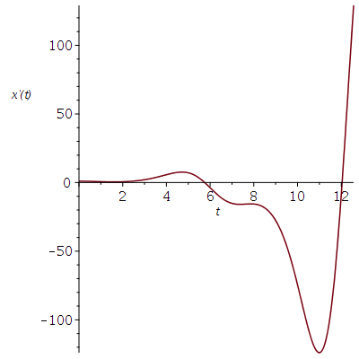

Second Order ODE with Constant Coefficients
In this section, we introduce some of the functions use to solve and display solutions of ODE of order higher than one; in fact, we will only consider second order ODE. The reader should be familiar with the material presented in the section .
General Solutions
Consider the following second order homogeneous linear ODE.
> eq1 := diff(y(x),x$2)-2*diff(y(x),x)+y(x)=0;\[ eq1 := \frac{\text{d}^2}{\text{d}x^2} y(x) - 2 \frac{\text{d}}{\text{d}x} y(x) + y(x) = 0 \]
The reader has probably seen that the general solution of this ODE is of the form \(y(x) = a_1 y_1(x) + a_2 y_2(x)\), where \(a_1\) and \(a_2\) are two arbitrary constants, and \(y_1(x)\) and \(y_2(x)\) are two linearly independent solutions of ODE. If we use Maple to solve this ODE, we get
> dsolve(eq1,y(x));\[ y(x) = \_C1 e^x + \_C2 e^x x \]
Maple seems to have passed its basic ODE course.
Consider the second order non-homogeneous linear ODE
> eq2 := diff(y(x),x$2)-2*diff(y(x),x)+y(x) = exp(x);\[ eq2 := \frac{\text{d}^2}{\text{d}x^2} y(x) - 2 \frac{\text{d}}{\text{d}x} y(x) + y(x) = e^x \]
The general solution of such an ODE is of the form \(y(x) = y_g(x) + y_p(x)\) where \(y_g(x)\) is the general solution of the associated homogeneous ODE and \(y_p(x)\) is any particular solution.
> dsolve(eq2,y(x));\[ y(x) = e^x \_C2 + e^x x \_C1 + \frac{x^2 e^x}{2} \]
One can check that \(\frac{x^2 e^x}{2}\) is a particular solution.
> eval(subs(y(x)=x^2*exp(x)/2,eq2));\[ e^x = e^x \]
Note: Two functions are linearly independent if we can not write one as a multiple of the other. To determine if two solutions \(y_1(x)\) and \(y_2(x)\) of an homogeneous ODE are linearly independent, we compute the determinant of the matrix
\[ \begin{bmatrix} y_1(x) & y_2(x) \\ y_1'(x) & y_2'(x) \end{bmatrix} \]This matrix is called the Wronskian. If the determinant is different than zero at one point, then the two solutions are linearly independent. If the determinant is zero at one point, then they are dependent.
WARNING: If the determinant of the Wronskian of two solutions of an ordinary differential equation of order two with constant coefficients is non-zero at one point then it is non-zero at all points in the domain of the two solutions. Likewise, if the determinant of the Wronskian of two solutions is zero at one point than it is zero at all points in the domain of the two solutions. This is not true for two arbitrary functions. We cannot conclude that two arbitrary functions are linearly independent because the determinant of their Wronskian is non-zero at one point. We have to make sure that it is non-zero at every point of their domain before being able to claim that they are linearly independent.
Let's check that the two solutions of the homogeneous ODE are linearly independent.
> with(VectorCalculus): with(LinearAlgebra): Determinant(Wronskian([exp(x), x*exp(x)], x))\[ (e^x)^2 \]
Since \(e^{2x}\) is different than \(0\) at one point, and so at all points, the two solutions are linearly independent.
Example: Consider the ODE
> eq3 := diff(y(x),x$2)-4*diff(y(x),x)+13*y(x)=0;\[ eq3 := \frac{\text{d}^2}{\text{d}x^2} y(x) - 4 \frac{\text{d}}{\text{d}x} y(x) + 13 y(x) = 0 \]
Its solution is
> dsolve(eq3,y(x));\[ y(x) = \_C1 e^{2x} \sin(3x)+ \_C2 e^{2x} \cos(3x) \]
Applications
Damped Spring Motion
The damped motion of an object attached to a spring and damped with a piston is described by the following ODE.
> eq4 := diff(y(x),x$2)+beta*diff(y(x),x)+omega^2*y(x)=0;\[ eq4 := \frac{\text{d}^2}{\text{d}x^2} y(x) + \beta \frac{\text{d}}{\text{d}x} y(x) + \omega^2 y(x) = 0 \]
where \(\omega = K/m\), with \(K\) a constant and \(m\) is the mass of the object, is the spring constant. The constant \(\beta\) is the damping coefficient.
If the object is released from rest at a distance of \(1\) m from its equilibrium position, the initial conditions are \(y(0)=1\) and \(y'(0)=0\). The solution of eq4 with these initial conditions is obtained as it follows:
> sol:=dsolve({eq4,D(y)(0)=0,y(0)=1},y(x)):
We let the reader run the previous command with a semicolon if they really want to see the long solution. It suffices to note that the solution involves \(\sqrt{ \beta^2 + 4 \alpha^2}\) and a division by \(\beta^2 - 4 \alpha^2\). For \(\beta^2 + 4 \alpha^2 < 0\), the solution has cosine and sine terms that are responsible for oscillations. For \(\beta^2 + 4 \alpha^2 > 0\), the solution has exponential terms with negative exponents for \(x > 0\) and we have no more oscillation, We have over damping. Finally, for \(\beta^2 + 4 \alpha^2 = 0\), the previous solution in not valid. We will show below that there is also no more oscillations. The system is critically damped.
We plot this solution for \(\omega=1\) and \(\beta = 0, 0.75, 1.5, 2.25, 3\).
> yp:=(xx,bb)->subs({omega=1,x=xx,beta=bb},rhs(sol));
\[
yp := (xx, bb) \mapsto subs({\beta = bb, \omega = 1, x = xx}, rhs(sol))
\]
> plot1:=plot(yp(x,0),x=0..6*Pi,color=red): > plot2:=plot(yp(x,0.75),x=0..6*Pi,color=blue): > plot3:=plot(yp(x,1.5),x=0..6*Pi,color=green): > plot4:=plot(yp(x,2.25),x=0..6*Pi,color=yellow): > plot5:=plot(yp(x,3),x=0..6*Pi,color=brown): > plots[display](plot1,plot2,plot3,plot4,plot5);

Note: The command
> plot({seq(yp(x,beta),beta=[0,0.75,1.5,2.25,3])},x=0..6*Pi,color=[red,green,blue,yellow,brown]);
will have produce the same figure with one important difference. The colours seems to be randomly associated to the values of \(\beta\). This is not convenient when referring to the each graph.
As we can see, without damping the spring has the same motion forever. If we add damping, the motion of the spring dies down. The system is critically damped when \(\beta=2\) and \(\omega=1\), the solution of ODE above is not valid for these values. There is a division by zero. For these values, the ODE eq4 becomes
> eq5:= subs({omega=1,beta=2},eq4);
\[
eq5 := \frac{\text{d}^2}{\text{d}x^2} y(x) + 2 \frac{\text{d}}{\text{d}x} y(x) + y(x) = 0
\]
whose solution is
> yp:=dsolve({eq5,D(y)(0)=0,y(0)=1},y(x));
\[
yp := y(x) = e^{-x} + e^{-x} x
\]
there are no more oscillations of the spring.
Starting with a damping of \(\beta \geq 2\), there are no more oscillations of the spring.
Forced Spring Motion
The motion of an object attached to a spring subject to a periodic driving force of the form \(\cos(\theta x)\) is governed by the following ODE.
> eq6 := diff(y(x),x$2)+beta*diff(y(x),x)+omega^2*y(x)=cos(theta*x);\[ eq6 := \frac{\text{d}^2}{\text{d}x^2} y(x) + \beta \frac{\text{d}}{\text{d}x} y(x) + \omega^2 y(x) = \cos(\theta x) \]
\(\omega\) and \(\beta\) have the same meaning as before. We consider the previous critical damping case, \(\beta=2\) and \(\omega=1\).
> eq7 := subs({omega=1,beta=2},eq6);
\[
eq7 := \frac{\text{d}^2}{\text{d}x^2} y(x) + 2 \frac{\text{d}}{\text{d}x} y(x) + y(x) = \cos(\theta x)
\]
We assume that the object starts from rest at its equilibrium point; so \(y(0)=0\) and \(y'(0)=0\). The solution is given by
> sol := dsolve({eq7,y(0)=0,D(y)(0)=0},y(x));
\[
sol := y(x) = \frac{e^{-x} (\theta^2 -1)}{\theta^4 + 2 \theta^2 +1}
- \frac{e^{-x} x}{\theta^2 + 1} + \frac{-\cos(\theta x) \theta^2 + 2 \theta \sin(\theta x) + \cos(\theta x)}{(\theta^2 +1)^2}
\]
We plot the graph of the solution for \(\theta = 0, 0.75, 1.5, 2.25, 3\).
> yp:=(xx,tt)->subs({x=xx,theta=tt},rhs(sol));
\[
yp := (xx, tt) \mapsto subs({theta = tt, x = xx}, rhs(sol))
\]
> plot1:=plot(yp(x,0),x=0..6*Pi,color=red): > plot2:=plot(yp(x,0.75),x=0..6*Pi,color=blue): > plot3:=plot(yp(x,1.5),x=0..6*Pi,color=green): > plot4:=plot(yp(x,2.25),x=0..6*Pi,color=yellow): > plot5:=plot(yp(x,3),x=0..6*Pi,color=brown): > plots[display](plot1,plot2,plot3,plot4,plot5);

The period of the spring motion gets closer and closer to the
forcing period. We now estimate the amplitude and phase of the
solution when \(x\) is really
large. Since \(e^{-x} \to 0\)
as \(x \to \infty\), the dominant part of the solution is
> dom := coeff(expand(rhs(sol)*exp(x)), exp(x));\[ dom := -\frac{\cos(\theta x) \theta^2}{(\theta^2 +1)^2} + \frac{2 \theta \sin(\theta x)}{ (\theta^2 +1)^2} + \frac{\cos(\theta x)}{(\theta^2 +1)^2} \]
To determine the amplitude and phase of an expression of the form \(a_1 \cos(\theta x) + a_2 \sin(\theta x)\), we rewrite this expression as \(A \cos(\theta x + P)\), where \(A\) is the amplitude and \(P\) is the phase.
> a1 := coeff(dom,cos(theta*x)): a2 := coeff(dom,sin(theta*x)): > A := simplify(sqrt(a1^2+a2^2), assume = positive);\[ A := \frac{1}{\theta^2 + 1} \]
> P := simplify(arctan(-a2/a1));\[ P := \arctan\left(\frac{2 \theta}{\theta^2 - 1}\right) \]
We plot the amplitude and phase in function of \(\theta\).
> plot1:=plot(A,theta=0..2*Pi,color=red): > plot2:=plot(P,theta=0..2*Pi,color=blue,discont=true): > plots[display](plot1,plot2);

The amplitude is in red and the phase in blue. Is the phase really discontinuous? No, it isn't if we compute modulo \(\pi\) (the period of the tangent) and set \(\arctan(\infty) = \pi/2\).
Numerical Solutions of Second Order ODE
Consider the second order ODE with non-constant coefficients
> eq1 := diff(x(t),t$2) + cos(t)*x(t)=0;\[ eq1 := \frac{\text{d}^2}{\text{d}t^2} x(t) + \cos(t) x(t) = 0 \]
We may use dsolve() to find the general
solution of this ODE. If we also have an initial condition and are
not interested in the explicit solution, we may also
use dsolve() with the option numeric
to numerically
solve the ODE. For instance
> SYST := { eq1 } union {x(0)=0,D(x)(0)=1}:
> xs := dsolve(SYST, x(t),type=numeric, output=procedurelist);
\[
xs := proc(x_rkf45) ... end proc
\]
xs(t) is a function that return the vector [ t, x(t) , D(x)(t) ] for all t.
> xs(2.5);\[ [t = 2.5, x(t) = 1.81114646856115, \frac{\text{d}}{\text{d}t} x(t) = 1.10767665005579] \]
We can use xs to draw the graph of x(t) and D(x)(t) in function of t.
> with(plots): odeplot(xs,[t,x(t)],0..4*Pi, labels=[`t`,`x(t)`]);

> odeplot(xs,[t,D(x)(t)],0..4*Pi,labels=[`t`,`x'(t)`]);

We can also draw a parametric plot of (x(t), D(x)(t).
> odeplot(xs,[x(t),D(x)(t)],0..4*Pi,labels=[`x(t)`,`x'(t)`]);

In which direction is the positive motion along the curve?
Note: To get some information on the integration methods used
> infolevel[dsolve]:= 3:
before running dsolve(). Level 1 is the normal level. It goes up to level 5.